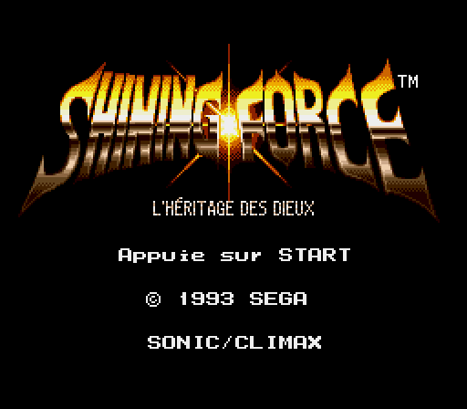
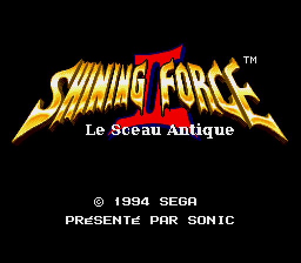
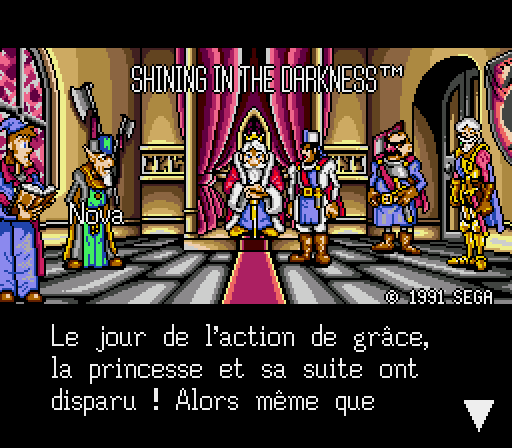
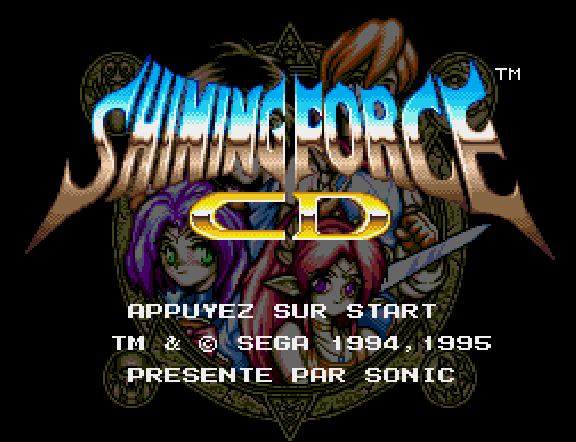
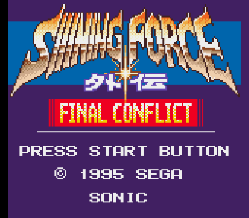
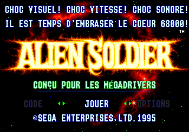
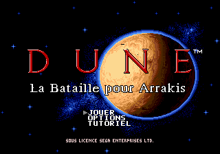
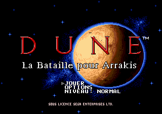

Mes jeux
Traductions et améliorations

Shining Force
L'Héritage des Dieux
La traduction française complète du premier Shining Force, refaite depuis le texte japonais, avec les corrections du jeu d'origine.
Mega DriveTerminéeMis à jour le 18/10/2026
Shining Force II
Le Sceau Antique
Shining Force II traduit depuis le japonais, avec le sous-titre d'origine, les noms japonais et plusieurs bugs corrigés.
Mega DriveVersion de test
Shining in the Darkness
Le premier jeu de la série, traduit depuis la version japonaise, avec la police accentuée, les menus élargis et la croix de l'église restaurée.
Mega DriveTerminéeMis à jour le 18/10/2026
Shining Force CD
Les deux livres de Shining Force CD et leurs suites, traduits depuis le japonais, avec menus élargis et police accentuée.
Mega CDVersion de testMis à jour le 18/10/2026
Shining Force Gaiden : Final Conflict
Portage Mega Drive dans le moteur de Shining Force II
L'épisode Game Gear resté au Japon, rejoué dans le moteur de Shining Force II et entièrement traduit en français. ROM d'essai.
Mega DriveEn cours
Alien Soldier
Traduction française
Traduction française complète du shoot'em up de Treasure, à partir de la version japonaise : intro, menus, armes, dialogues des boss, scènes d'histoire et génériques. ROM « world » qui démarre sur toutes les Mega Drive.
Mega DriveVersion de testVersion ASv05Mis à jour le 25/10/2026
Dune : La Bataille pour Arrakis
Traduction française
Traduction française complète du jeu de stratégie de Westwood : Mentats, menus, panneau de construction, tutoriel, écrans de fin et voix françaises. ROM « world » qui démarre sur toutes les Mega Drive.
Mega DriveVersion de testVersion V10Mis à jour le 25/10/2026
Nadia de la mer mystérieuse
Traduction française
Traduction française complète du jeu d'aventure Fushigi no Umi no Nadia (« Nadia, le secret de l'eau bleue »), faite depuis la version japonaise : dialogues, menus, objets, écrans d'intro, logo et mots de passe. Noms de la VF du dessin animé et ROM « world » qui démarre sur toutes les Mega Drive.
Mega DriveVersion de testVersion NADv05Mis à jour le 25/10/2026- Rent A Hero
Rent A Hero
Traduction française
Traduction française complète de l'aventure comique de Sega, faite à partir de la version japonaise : dialogues, menus, objets, sound test et générique, avec les jeux de mots adaptés en français. ROM « world » qui démarre sur toutes les Mega Drive.
Mega DriveVersion de testVersion V12Mis à jour le 25/10/2026 
Shining Force Résurrection
Traduction française et version enrichie
Shining Force entièrement traduit depuis le japonais, enrichi avec le contenu de la version GBA (Resurrection of the Dark Dragon) et les mécaniques de Shining Force II : nouveaux héros, cartes de Mawlock, combats, magies, Défis et New Game+. ROM de 3 Mo compatible avec une Mega Drive officielle.
Mega DriveEn coursVersion SFRv63Mis à jour le 25/10/2026
DuneRazor
Traduction française du DuneHack Rebuild de Ti_
Le DuneHack Rebuild de Ti_ en français : deux nouvelles Maisons jouables (Fremen et Corrino), nouvelles unités, niveaux de difficulté. Prévu pour émulateur et Mega SG : sur une Mega Drive d'origine, préférer DuneRazorOpti.
Mega DriveVersion de testVersion V02Mis à jour le 25/10/2026
DuneRazorOpti
DuneRazor allégé pour la Mega Drive d'origine
Dune FR enrichi des nouveautés de DuneRazor, sur le moteur d'origine pour tourner à pleine vitesse sur une vraie Mega Drive : Fremen et Corrino jouables, leurs Mentats, nouvelles cartes et réglages des unités.
Mega DriveEn coursVersion V08Mis à jour le 25/10/2026
Chargement des projets…